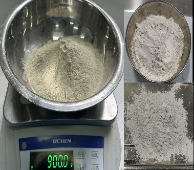
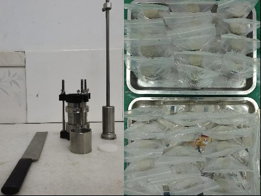
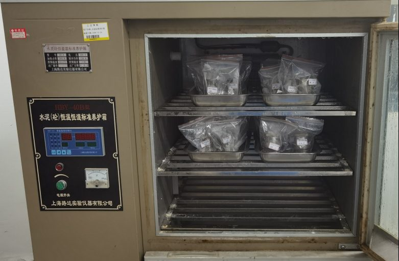
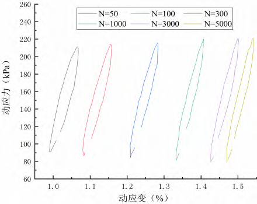
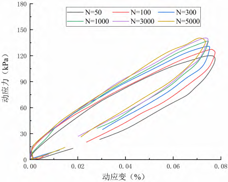

Expansive soil swells when wet and shrinks when dry, a common problem for foundations and roads. We mixed two industrial wastes (ground slag and fly ash) into expansive soil from Zhenjiang and tested its behaviour under cyclic loading on a dynamic triaxial rig. As lead I designed the test programme, led the team through preparation, compaction, curing and testing, and was main author of the final report.
用到的技能：试验方案设计、土工试验（击实、动三轴）、试样制备与养护、试验数据分析、科研报告写作
展现的能力：从方案设计到结题，牵头完成一个小型科研项目；组织团队分工推进
Skills: test design, geotechnical testing (compaction, dynamic triaxial), specimen preparation and curing, data analysis, research writing
Shows: leading a small research project from design to final report and organising a team to deliver it
Expansive soil occurs in more than 20 Chinese provinces. Its swelling and cracking cause building settlement and road deformation. Lime or cement are the usual fixes, but both are costly and carbon-intensive.
Ground slag and fly ash are waste from steel and power plants. Using them to stabilise soil would deal with waste and cut cost. Most studies look at static properties such as strength and swell; we wanted to see how stabilised soil behaves under repeated loads like traffic or earthquakes.
Materials: grey-green expansive soil from Zhenjiang (optimum moisture 22.5%), Class I fly ash, S95 ground slag.
Mix: slag to fly ash at 3:7 in the binder, based on the literature.
Variables: confining pressures of 120, 150 and 180 kPa, each with several dynamic stress amplitudes, recording hysteresis loops at different cycle counts.
Procedure: weigh and mix → seal and rest 24 h → compact in layers to GB/T 50123-2019 → cure in a constant temperature and humidity chamber → load on the triaxial rig to failure.

称量土和胶凝材料Weighing soil and binder

击实制样，试样逐个密封标记Compacting specimens, each sealed and labelled

恒温恒湿箱分龄期养护Curing in a constant temperature and humidity chamber
As cycles increase, loops shift along the strain axis, so residual strain accumulates, but each cycle adds less than the one before.
With loops overlaid, they tilt towards the stress axis and change from roughly elliptical to a narrow "willow-leaf" shape with smaller area: the specimen stiffens and plastic strain rate falls.
Likely mechanism: build-up and dissipation of pore pressure and rearrangement of the particle skeleton make the soil denser under repeated loading.

120 kPa：滞回曲线随循环次数（N=50 至 5000）向右移动120 kPa: loops shift right as cycles rise (N = 50 to 5,000)

平移到同一起点后：曲线变窄、向应力轴倾斜，刚度增大Overlaid: loops narrow and tilt towards the stress axis as stiffness rises
5. 不足与反思5. Limits and reflection
结论偏定性。描述了曲线形态的变化，但没有算出动弹性模量、阻尼比这些可以量化比较的指标。
缺少对照组。没有把改良土和未改良的素土放在同样条件下对比，所以还不能直接说明掺废渣改良了多少。
变量没覆盖全。报告里自己也写了：压实度、加载频率对动力特性的影响还需要进一步研究。
Qualitative findings. Loop shapes were described, but dynamic modulus and damping ratio were not calculated for quantitative comparison.
No control group. Untreated soil was not tested under the same conditions, so the size of the improvement cannot yet be stated.
Variables not covered. As the report notes, the effects of compaction degree and loading frequency still need study.
This was the first project I led from scratch: proposal, test design, scheduling, booking equipment, taking the team through each step and closing on time. It was small, but the cycle of setting goals, dividing work, driving progress and delivering is the same one I later studied in project management.